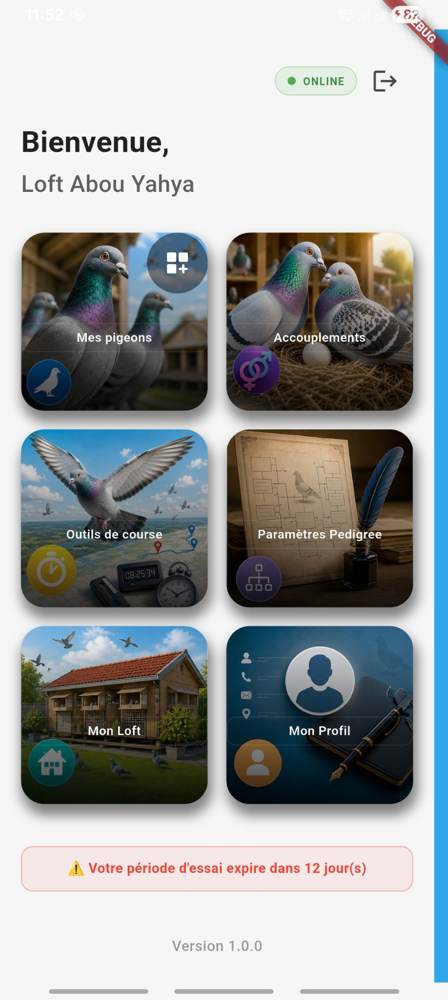
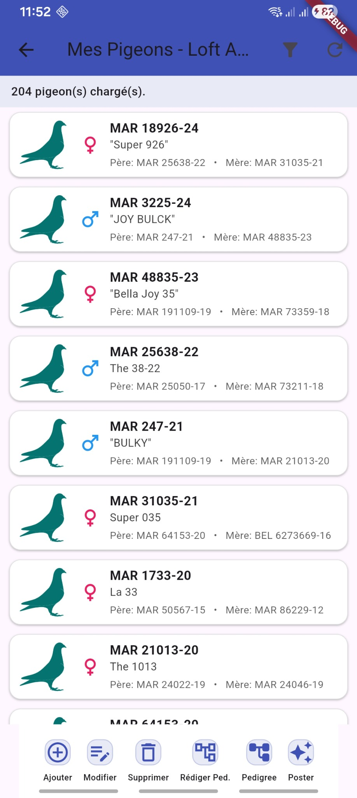
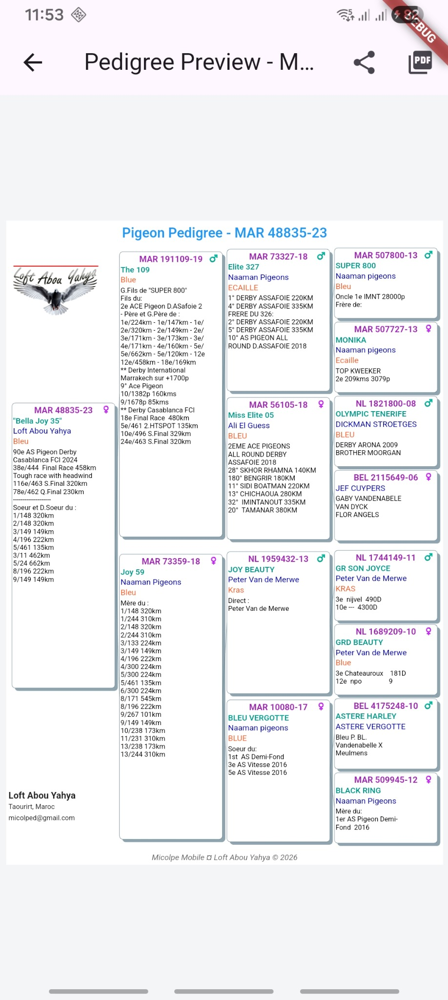
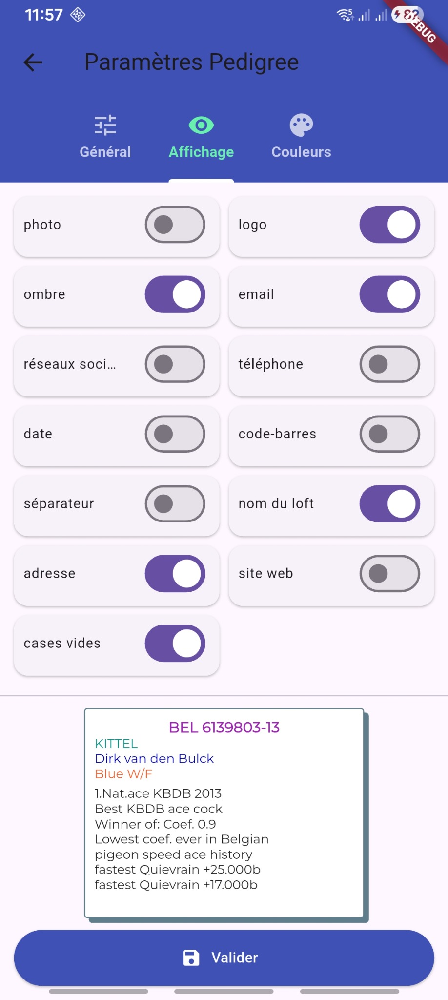
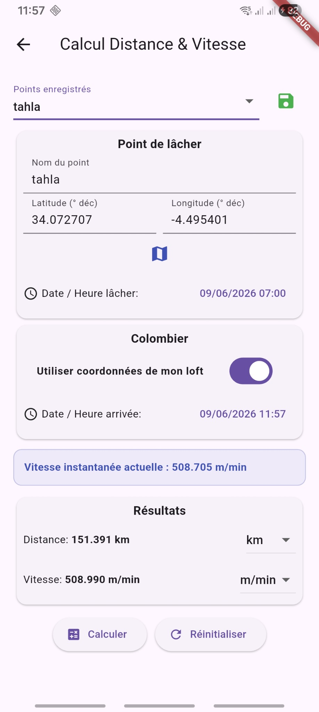
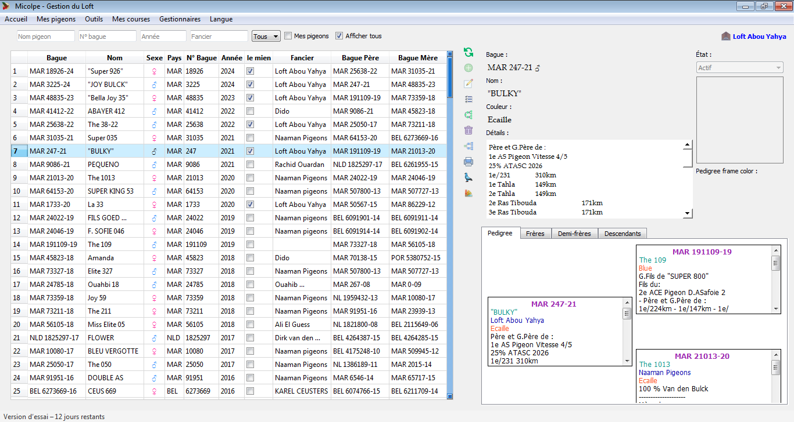

🐦
Mes pigeons
Fiches détaillées, parents, sexe, couleur, propriétaire, recherche et actions rapides.
Gérez vos pigeons, pedigrees, loft, accouplements et outils de course depuis une application moderne, pensée pour les colombophiles.

Micolpe rassemble les fonctions essentielles pour suivre votre colonie, préparer vos pedigrees et travailler même sans connexion internet.
Fiches détaillées, parents, sexe, couleur, propriétaire, recherche et actions rapides.
Rédaction, aperçu mobile, export PDF et paramètres d’affichage personnalisables.
Calcul de distance et vitesse avec coordonnées du point de lâcher et du colombier.
Gestion des couples, ajout global des frères et préparation des familles.
Travail local sécurisé avec synchronisation lorsque la connexion revient.
Une nouvelle version mobile moderne, avec continuité de l’esprit Micolpe bureau.
Quelques écrans de la version mobile et de la version bureau.





Téléchargez l’application ou contactez-nous pour plus d’informations.